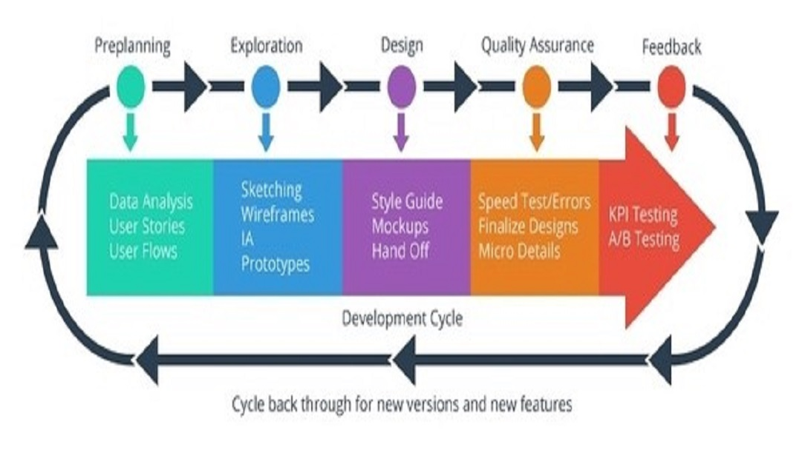
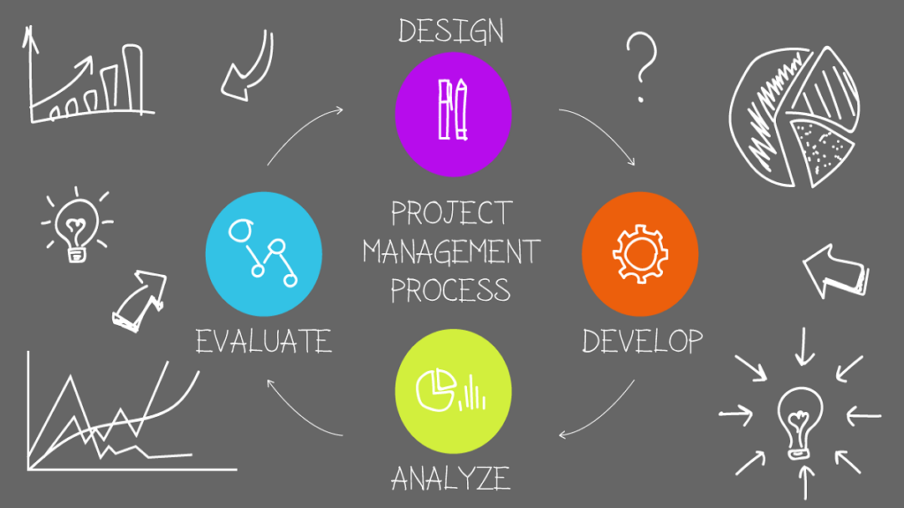

Ecommerce refers to commercial transactions conducted online. This means that whenever you buy and sell something using the Internet, you’re involved in ecommerce. It leverages merchandising, planning, marketing, user experience and analytics to profitably grow the business.

User experience (UX) design is the process of creating products that provide meaningful and relevant experiences to users. This involves the design of the entire process of acquiring and integrating the product, including aspects of branding, design, usability, and function.

Project management is the practice of initiating, planning, executing, controlling, and closing the work of a team to achieve specific goals and meet specific success criteria at the specified time.